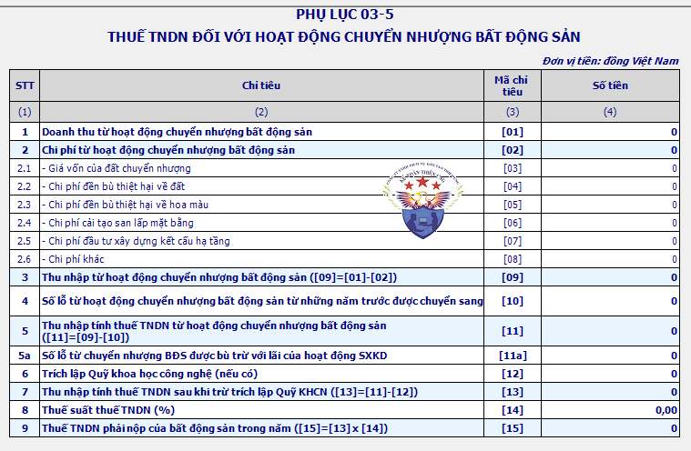

Hướng dẫn tính thuế TNDN từ chuyển nhượng bất động sản; Cách kê khai thuế TNDN chuyển nhượng BĐS; Tờ khai thuế TNDN chuyển nhượng quyền sử dụng đất theo quy định mới nhất.
Căn cứ theo Điều 16, Điều 17 Thông tư số 78/2014/TT-BTC và Điều 9 Thông tư 96/2015/TT-BTC quy định về thuế TNDN từ chuyển nhượng bất động sản cụ thể như sau:
----------------------------------------------------------------------------------------
I. Đối tượng chịu thuế TNDN chuyển nhượng bất động sản:
1. Doanh nghiệp thuộc diện chịu thuế thu nhập từ chuyển nhượng bất động sản bao gồm:
- Doanh nghiệp thuộc mọi thành phần kinh tế, mọi ngành nghề có thu nhập từ hoạt động chuyển nhượng bất động sản;
- Doanh nghiệp kinh doanh bất động sản có thu nhập từ hoạt động cho thuê lại đất.
2. Thu nhập từ hoạt động chuyển nhượng bất động sản bao gồm:
- Thu nhập từ chuyển nhượng quyền sử dụng đất, chuyển nhượng quyền thuê đất (gồm cả chuyển nhượng dự án gắn với chuyển nhượng quyền sử dụng đất, quyền thuê đất theo quy định của pháp luật);
- Thu nhập từ hoạt động cho thuê lại đất của doanh nghiệp kinh doanh bất động sản theo quy định của pháp luật về đất đai không phân biệt có hay không có kết cấu hạ tầng, công trình kiến trúc gắn liền với đất;
- Thu nhập từ chuyển nhượng nhà, công trình xây dựng gắn liền với đất, kể cả các tài sản gắn liền với nhà, công trình xây dựng đó nếu không tách riêng giá trị tài sản khi chuyển nhượng không phân biệt có hay không có chuyển nhượng quyền sử dụng đất, chuyển nhượng quyền thuê đất;
- Thu nhập từ chuyển nhượng các tài sản gắn liền với đất;
- Thu nhập từ chuyển nhượng quyền sở hữu hoặc quyền sử dụng nhà ở.
Thu nhập từ cho thuê lại đất của doanh nghiệp kinh doanh bất động sản không bao gồm trường hợp doanh nghiệp chỉ cho thuê nhà, cơ sở hạ tầng, công trình kiến trúc trên đất.
-------------------------------------------------------------------------
II. Cách tính thuế TNDN chuyển nhượng bất động sản:
| Số thuế TNDN phải nộp | = | Thu nhập tính thuế từ hoạt động chuyển nhượng bất động sản | X | Thuế suất 20% |
Trong đó:
| Thu nhập tính thuế | = | Thu nhập chịu thuế | - | Các khoản lỗ của hoạt động chuyển nhượng bất động sản của các năm trước (nếu có). |
Lưu ý: Thu nhập từ chuyển nhượng bất động sản phải xác định riêng để kê khai nộp thuế và không áp dụng ưu đãi thuế thu nhập doanh nghiệp.
- Doanh nghiệp trong kỳ tính thuế có các hoạt động chuyển nhượng bất động sản, chuyển nhượng dự án đầu tư, chuyển nhượng quyền tham gia thực hiện dự án đầu tư (trừ dự án thăm dò, khai thác khoáng sản) nếu bị lỗ thì số lỗ này được bù trừ với lãi của hoạt động sản xuất kinh doanh (bao gồm cả thu nhập khác quy định tại Điều 7 Thông tư 78).
- Trường hợp doanh nghiệp làm thủ tục giải thể doanh nghiệp, sau khi có quyết định giải thể nếu có chuyển nhượng bất động sản là tài sản cố định của doanh nghiệp thì thu nhập (lãi) từ chuyển nhượng bất động sản (nếu có) được bù trừ với lỗ từ hoạt động sản xuất kinh doanh (bao gồm cả số lỗ của các năm trước được chuyển sang theo quy định) vào kỳ tính thuế phát sinh hoạt động chuyển nhượng bất động sản.
(Theo khoản 2 điều 4 Thông tư 78/2014/TT-BTC)
1. Cách tính thu nhập chịu thuế từ chuyển nhượng bất động sản:
- Thu nhập chịu thuế từ chuyển nhượng bất động sản được xác định bằng doanh thu thu được từ hoạt động chuyển nhượng bất động sản trừ giá vốn của bất động sản và các khoản chi phí được trừ liên quan đến hoạt động chuyển nhượng bất động sản.
| Thu nhập chịu thuế | = | Doanh thu thu được từ hoạt động chuyển nhượng bất động sản | - | Giá vốn của bất động sản và các khoản chi phí được trừ liên quan đến hoạt động chuyển nhượng bất động sản |
a) Doanh thu từ hoạt động chuyển nhượng bất động sản.
a.1) Doanh thu từ hoạt động chuyển nhượng bất động sản được xác định theo giá thực tế chuyển nhượng bất động sản theo hợp đồng chuyển nhượng, mua bán bất động sản phù hợp với quy định của pháp luật (bao gồm cả các khoản phụ thu và phí thu thêm nếu có).
Trường hợp giá chuyển quyền sử dụng đất theo hợp đồng chuyển nhượng, mua bán bất động sản thấp hơn giá đất tại bảng giá đất do Ủy ban nhân dân tỉnh, thành phố trực thuộc Trung ương quy định tại thời điểm ký hợp đồng chuyển nhượng bất động sản thì tính theo giá đất do Ủy ban nhân dân tỉnh, thành phố trực thuộc Trung ương quy định tại thời điểm ký hợp đồng chuyển nhượng bất động sản.
- Thời điểm xác định doanh thu tính thuế là thời điểm bên bán bàn giao bất động sản cho bên mua, không phụ thuộc việc bên mua đã đăng ký quyền sở hữu tài sản, quyền sử dụng đất, xác lập quyền sử dụng đất tại cơ quan nhà nước có thẩm quyền.
--------------------------------------------------------------------------------
Trường hợp DN thu tiền tiền ứng trước của khách hàng theo tiến độ:
- Trường hợp doanh nghiệp thực hiện dự án đầu tư cơ sở hạ tầng, nhà để chuyển nhượng hoặc cho thuê, có thu tiền ứng trước của khách hàng theo tiến độ dưới mọi hình thức thì thời điểm xác định doanh thu tính thuế thu nhập doanh nghiệp tạm nộp là thời điểm thu tiền của khách hàng, cụ thể:
+ Trường hợp doanh nghiệp có thu tiền của khách hàng mà xác định được chi phí tương ứng với doanh thu đã ghi nhận (bao gồm cả chi phí trích trước của phần dự toán hạng mục công trình chưa hoàn thành tương ứng với doanh thu đã ghi nhận) thì doanh nghiệp kê khai nộp thuế thu nhập doanh nghiệp theo doanh thu trừ chi phí.
+ Trường hợp doanh nghiệp có thu tiền của khách hàng mà chưa xác định được chi phí tương ứng với doanh thu thì doanh nghiệp kê khai tạm nộp thuế thu nhập doanh nghiệp theo tỷ lệ 1% trên doanh thu thu được tiền và doanh thu này chưa phải tính vào doanh thu tính thuế thu nhập doanh nghiệp trong năm.
Khi bàn giao bất động sản doanh nghiệp phải thực hiện quyết toán thuế thu nhập doanh nghiệp và quyết toán lại số thuế thu nhập doanh nghiệp phải nộp.
Trường hợp số thuế thu nhập doanh nghiệp đã tạm nộp thấp hơn số thuế thu nhập doanh nghiệp phải nộp thì doanh nghiệp phải nộp đủ số thuế còn thiếu vào Ngân sách Nhà nước.
Trường hợp số thuế thu nhập doanh nghiệp đã tạm nộp lớn hơn số thuế phải nộp thì doanh nghiệp được trừ số thuế nộp thừa vào số thuế thu nhập doanh nghiệp phải nộp của kỳ tiếp theo hoặc được hoàn lại số thuế đã nộp thừa.
- Đối với doanh nghiệp kinh doanh bất động sản có thu tiền ứng trước của khách hàng theo tiến độ và kê khai tạm nộp thuế theo tỷ lệ % trên doanh thu thu được tiền, doanh thu này chưa phải tính vào doanh thu tính thuế thu nhập doanh nghiệp trong năm đồng thời có phát sinh chi phí quảng cáo, tiếp thị, khuyến mại, hoa hồng môi giới khi bắt đầu chào bán vào năm phát sinh doanh thu thu tiền theo tiến độ thì chưa tính các khoản chi phí này vào năm phát sinh chi phí.
-> Các khoản chi phí quảng cáo, tiếp thị, khuyến mại, hoa hồng môi giới này được tính vào chi phí được trừ theo mức khống chế theo quy định vào năm đầu tiên bàn giao bất động sản, phát sinh doanh thu tính thuế thu nhập doanh nghiệp.
------------------------------------------------------------------------------
a.2) Doanh thu để tính thu nhập chịu thuế trong một số trường hợp được xác định như sau:
- Trường hợp doanh nghiệp có cho thuê lại đất thì doanh thu để tính thu nhập chịu thuế là số tiền bên thuê trả từng kỳ theo hợp đồng thuê.
Trường hợp bên thuê trả tiền thuê trước cho nhiều năm thì doanh thu để tính thu nhập chịu thuế được phân bổ cho số năm trả tiền trước hoặc được xác định theo doanh thu trả tiền một lần.
-> Việc chọn hình thức doanh thu trả tiền một lần chỉ được xác định khi doanh nghiệp đã đảm bảo hoàn thành các trách nhiệm tài chính đối với Nhà nước, đảm bảo các nghĩa vụ đối với các bên thuê lại đất cho hết thời hạn cho thuê lại đất.
- Trường hợp doanh nghiệp đang trong thời gian hưởng ưu đãi thuế thu nhập doanh nghiệp lựa chọn phương pháp xác định doanh thu để tính thu nhập chịu thuế là toàn bộ số tiền thuê bên thuê trả trước cho nhiều năm thì việc xác định số thuế thu nhập doanh nghiệp từng năm miễn thuế, giảm thuế căn cứ vào tổng số thuế thu nhập doanh nghiệp của số năm trả tiền trước chia (:) số năm bên thuê trả tiền trước.
Xem thêm: Điều kiện ưu đãi thuế TNDN
- Trường hợp tổ chức tín dụng nhận giá trị quyền sử dụng đất bảo đảm tiền vay để thay thế cho việc thực hiện nghĩa vụ được bảo đảm nếu có chuyển quyền sử dụng đất là tài sản thế chấp bảo đảm tiền vay thì doanh thu để tính thu nhập chịu thuế là giá chuyển nhượng quyền sử dụng đất do các bên thỏa thuận.
- Trường hợp chuyển quyền sử dụng đất là tài sản kê biên bảo đảm thi hành án thì doanh thu để tính thu nhập chịu thuế là giá chuyển nhượng quyền sử dụng đất do các bên đương sự thỏa thuận hoặc giá do Hội đồng định giá xác định.
Lưu ý: Việc xác định doanh thu đối với các trường hợp nêu tại tiết a2 này phải đảm bảo các nguyên tắc nêu tại tiết a1 nêu trên
-------------------------------------------------------------------------------
b) Chi phí chuyển nhượng bất động sản:
b.1) Nguyên tắc xác định chi phí:
- Các khoản chi được trừ để xác định thu nhập chịu thuế của hoạt động chuyển nhượng bất động sản trong kỳ tính thuế phải tương ứng với doanh thu để tính thu nhập chịu thuế và phải đảm bảo các điều kiện quy định các khoản chi được trừ và không thuộc các khoản chi không được trừ quy định tại Điều 6 Thông tư 78.
Xem thêm: Các khoản chi phí được trừ và không được trừ
- Trường hợp dự án đầu tư hoàn thành từng phần và chuyển nhượng dần theo tiến độ hoàn thành thì các khoản chi phí chung sử dụng cho dự án, chi phí trực tiếp sử dụng cho phần dự án đã hoàn thành được phân bổ theo m2 đất chuyển quyền để xác định thu nhập chịu thuế của diện tích đất chuyển quyền; bao gồm:
Chi phí đường giao thông nội bộ;
Khuôn viên cây xanh;
Chi phí đầu tư xây dựng hệ thống cấp, thoát nước;
Trạm biến thế điện;
Chi phí bồi thường về tài sản trên đất;
Chi phí bồi thường, hỗ trợ, tái định cư và kinh phí tổ chức thực hiện bồi thường giải phóng mặt bằng được cấp có thẩm quyền phê duyệt còn lại chưa được trừ vào tiền sử dụng đất, tiền thuê đất theo quy định của chính sách thu tiền sử dụng đất, thu tiền thuê đất, tiền sử dụng đất, tiền thuê đất phải nộp Ngân sách Nhà nước, các chi phí khác đầu tư trên đất liên quan đến chuyển quyền sử dụng đất, chuyển quyền thuê đất.
Việc phân bổ các chi phí trên được thực hiện theo công thức sau:
| Chi phí phân bổ cho diện tích đất đã chuyển nhượng | = | Tổng chi phí đầu tư kết cấu hạ tầng | x | Diện tích đất đã chuyển nhượng |
| Tổng diện tích đất được giao làm dự án (trừ diện tích đất sử dụng vào mục đích công cộng theo quy định pháp luật về đất) |
- Trường hợp một phần diện tích của dự án không chuyển nhượng được sử dụng vào hoạt động kinh doanh khác thì các khoản chi phí chung nêu trên cũng phân bổ cho cả phần diện tích này để theo dõi, hạch toán, kê khai nộp thuế thu nhập doanh nghiệp đối với hoạt động kinh doanh khác.
- Trường hợp doanh nghiệp có hoạt động đầu tư xây dựng cơ sở hạ tầng kéo dài trong nhiều năm và chỉ quyết toán giá trị kết cấu hạ tầng khi toàn bộ công việc hoàn tất thì khi tổng hợp chi phí chuyển nhượng bất động sản cho phần diện tích đất đã chuyển quyền, doanh nghiệp được tạm phân bổ chi phí đầu tư kết cấu hạ tầng thực tế đã phát sinh theo tỷ lệ diện tích đất đã chuyển quyền theo công thức nêu trên và trích trước các khoản chi phí đầu tư xây dựng cơ sở hạ tầng tương ứng với doanh thu đã ghi nhận khi xác định thu nhập chịu thuế.
Sau khi hoàn tất quá trình đầu tư xây dựng, doanh nghiệp tính toán, điều chỉnh lại phần chi phí đầu tư kết cấu hạ tầng đã tạm phân bổ và trích trước cho phần diện tích đã chuyển quyền cho phù hợp với tổng giá trị kết cấu hạ tầng.
Trường hợp khi điều chỉnh lại phát sinh số thuế nộp thừa so với số thuế thu nhập từ chuyển nhượng bất động sản phải nộp thì doanh nghiệp được trừ số thuế nộp thừa vào số thuế phải nộp của kỳ tính thuế tiếp theo hoặc được hoàn trả theo quy định hiện hành; nếu số thuế đã nộp chưa đủ thì doanh nghiệp có trách nhiệm nộp đủ số thuế còn thiếu theo quy định.
---------------------------------------------------------------------
b.2) Chi phí chuyển nhượng bất động sản được trừ bao gồm:
- Giá vốn của đất chuyển quyền được xác định phù hợp với nguồn gốc quyền sử dụng đất, cụ thể như sau:
+ Đối với đất Nhà nước giao có thu tiền sử dụng đất, thu tiền cho thuê đất thì giá vốn là số tiền sử dụng đất, số tiền cho thuê đất thực nộp Ngân sách Nhà nước;
+ Đối với đất nhận quyền sử dụng của tổ chức, cá nhân khác thì căn cứ vào hợp đồng và chứng từ trả tiền hợp pháp khi nhận quyền sử dụng đất, quyền thuê đất; trường hợp không có hợp đồng và chứng từ trả tiền hợp pháp thì giá vốn được tính theo giá do Ủy ban nhân dân tỉnh, thành phố trực thuộc Trung ương quy định tại thời điểm doanh nghiệp nhận chuyển nhượng bất động sản.
+ Đối với đất có nguồn gốc do góp vốn thì giá vốn là giá trị quyền sử dụng đất, quyền thuê đất theo biên bản định giá tài sản khi góp vốn;
+ Trường hợp doanh nghiệp đổi công trình lấy đất của Nhà nước thì giá vốn được xác định theo giá trị công trình đã đổi, trừ trường hợp thực hiện theo quy định riêng của cơ quan nhà nước có thẩm quyền.
+ Giá trúng đấu giá trong trường hợp đấu giá quyền sử dụng đất, quyền thuê đất;
+ Đối với đất của doanh nghiệp có nguồn gốc do thừa kế theo pháp luật dân sự; do được cho, biếu, tặng mà không xác định được giá vốn thì xác định theo giá các loại đất do Ủy ban nhân dân tỉnh, thành phố trực thuộc Trung ương quyết định căn cứ vào Bảng khung giá các loại đất do Chính phủ quy định tại thời điểm thừa kế, cho, biếu, tặng.
Trường hợp đất của doanh nghiệp được thừa kế, cho, biếu, tặng trước năm 1994 thì giá vốn được xác định theo giá các loại đất do Ủy ban nhân dân tỉnh, thành phố trực thuộc Trung ương quyết định năm 1994 căn cứ vào Bảng khung giá các loại đất quy định tại Nghị định số 87/CP ngày 17 tháng 8 năm 1994 của Chính phủ.
+ Đối với đất thế chấp bảo đảm tiền vay, đất là tài sản kê biên để bảo đảm thi hành án thì giá vốn đất được xác định tùy theo từng trường hợp cụ thể theo hướng dẫn tại các điểm nêu trên.
- Chi phí đền bù thiệt hại về đất.
- Chi phí đền bù thiệt hại về hoa màu.
- Chi phí bồi thường, hỗ trợ, tái định cư và chi phí tổ chức thực hiện bồi thường, hỗ trợ, tái định cư theo quy định của pháp luật.
Các khoản chi phí bồi thường, đền bù, hỗ trợ, tái định cư và chi phí tổ chức thực hiện bồi thường, hỗ trợ, tái định cư nêu trên nếu không có hóa đơn thì được lập Bảng kê ghi rõ: tên; địa chỉ của người nhận; số tiền đền bù, hỗ trợ; chữ ký của người nhận tiền và được chính quyền phường, xã nơi có đất được đền bù, hỗ trợ xác nhận theo đúng quy định của pháp luật về bồi thường, hỗ trợ và tái định cư khi Nhà nước thu hồi đất.
- Các loại phí, lệ phí theo quy định của pháp luật liên quan đến cấp quyền sử dụng đất.
- Chi phí cải tạo đất, san lấp mặt bằng.
- Chi phí đầu tư xây dựng kết cấu hạ tầng như đường giao thông, điện, cấp nước, thoát nước, bưu chính viễn thông...
- Giá trị kết cấu hạ tầng, công trình kiến trúc có trên đất.
- Các khoản chi phí khác liên quan đến bất động sản được chuyển nhượng.
Trường hợp doanh nghiệp có hoạt động kinh doanh nhiều ngành nghề khác nhau thì phải hạch toán riêng các khoản chi phí. Trường hợp không hạch toán riêng được chi phí của từng hoạt động thì chi phí chung được phân bổ theo tỷ lệ giữa doanh thu từ chuyển nhượng bất động sản so với tổng doanh thu của doanh nghiệp.
Không được tính vào chi phí chuyển nhượng bất động sản các khoản chi phí đã được Nhà nước thanh toán hoặc thanh toán bằng nguồn vốn khác.
----------------------------------------------------------------------
2. Thuế suất thuế TNDN đối với hoạt động chuyển nhượng bất động sản là 20%
(áp dụng từ ngày 01/01/2016).
Thuế suất thuế GTGT chuyển nhượng bất động sản:
Công văn số 5174 / CTHN-TTHT ngày 2/9/2021 của Cục Thuế TP. Hà Nội:
"Căn cứ quy định trên, trường hợp Công ty TNHH Đầu tư Đồng Lực có phát sinh hoạt động chuyển nhượng bất động sản thì Công ty phải lập hóa đơn và kê khai thuế GTGT theo quy định, thuế suất thuế GTGT 10%, giá tính thuế GTGT thực hiện theo hướng dẫn tại khoản 10 Điều 7 Thông tư số 219/2013/TT-BTC ngày 31/12/2013 của Bộ Tài chính."
---------------------------------------------------------------------
3. Trường hợp tổ chức tín dụng nhận giá trị bất động sản là tài sản bảo đảm tiền vay để thay thế cho việc thực hiện nghĩa vụ được bảo đảm thì tổ chức tín dụng khi được phép chuyển nhượng bất động sản theo quy định của pháp luật phải kê khai nộp thuế thu nhập từ hoạt động chuyển nhượng bất động sản vào Ngân sách Nhà nước.
Trường hợp bán đấu giá bất động sản là tài sản bảo đảm tiền vay thì số tiền thu được thực hiện thanh toán theo quy định của Chính phủ về bảo đảm tiền vay của các tổ chức tín dụng và kê khai nộp thuế theo quy định. Sau khi thanh toán các khoản trên, số tiền còn lại được trả cho các tổ chức kinh doanh đã thế chấp bất động sản để bảo đảm tiền vay.
Trường hợp tổ chức tín dụng được phép chuyển nhượng bất động sản đã được thế chấp theo quy định của pháp luật để thu hồi vốn nếu không xác định được giá vốn của bất động sản thì giá vốn được xác định bằng (=) vốn vay phải trả theo hợp đồng thế chấp bất động sản cộng (+) chi phí lãi vay chưa trả đến thời điểm phát mãi bất động sản thế chấp theo hợp đồng tín dụng cộng (+) các khoản chi phí phát sinh khi chuyển nhượng bất động sản nếu có hóa đơn, chứng từ hợp pháp.
---------------------------------------------------------------------------
4. Trường hợp cơ quan thi hành án bán đấu giá bất động sản là tài sản bảo đảm thi hành án thì số tiền thu được thực hiện theo quy định tại Nghị định của Chính phủ về kê biên, đấu giá quyền sử dụng đất để bảo đảm thi hành án.
Tổ chức được ủy quyền bán đấu giá bất động sản thực hiện kê khai, khấu trừ tiền thuế thu nhập từ chuyển nhượng bất động sản nộp vào Ngân sách Nhà nước. Trên các chứng từ ghi rõ kê khai, nộp thuế thay về bán tài sản đảm bảo thi hành án.
Trường hợp cơ quan thi hành án chuyển nhượng bất động sản là tài sản đảm bảo thi hành án nếu không xác định được giá vốn của bất động sản thì giá vốn được xác định bằng (=) số tiền nợ phải trả nợ theo quyết định của Tòa án để thi hành án cộng (+) các khoản chi phí phát sinh khi chuyển nhượng bất động sản nếu có hóa đơn chứng từ hợp pháp.
Xem thêm: Cách tính thuế thu nhập doanh nghiệp
----------------------------------------------------------------------------
III. Kê khai thuế TNDN chuyển nhượng bất động sản:
Căn cứ theo điểm đ, e khoản 4 Điều 8 Nghị định 126/2020/NĐ-CP quy định các loại thuế, khoản thu khác thuộc ngân sách nhà nước khai theo từng lần phát sinh:
“đ) Thuế giá trị gia tăng, thuế thu nhập doanh nghiệp không phát sinh thường xuyên của người nộp thuế áp dụng theo phương pháp trực tiếp trên giá trị gia tăng theo quy định của pháp luật về thuế giá trị gia tăng và tỷ lệ trên doanh thu theo quy định của pháp luật về thuế thu nhập doanh nghiệp; trừ trường hợp người nộp thuế trong tháng phát sinh nhiều lần thì được khai theo tháng.
e) Thuế thu nhập doanh nghiệp đối với hoạt động chuyển nhượng bất động sản của người nộp thuế áp dụng theo phương pháp tỷ lệ trên doanh thu theo quy định của pháp luật về thuế TNDN.”
Căn cứ theo điểm b Khoản 6 Điều 8 Nghị định 126/2020/NĐ-CP quy định:
“6. Các loại thuế, khoản thu khai quyết toán năm và quyết toán đến thời điểm giải thể, phá sản, chấm dứt hoạt động, chấm dứt hợp đồng hoặc tổ chức lại doanh nghiệp...
b) Thuế thu nhập doanh nghiệp (trừ thuế thu nhập doanh nghiệp từ chuyển nhượng vốn của nhà thầu nước ngoài; thuế thu nhập doanh nghiệp kê khai theo phương pháp tỷ lệ trên doanh thu theo từng lần phát sinh hoặc theo tháng theo quy định tại điểm đ khoản 4 Điều này). Người nộp thuế phải tự xác định số thuế TNDN tạm nộp quý (bao gồm cả tạm phân bổ số thuế TNDN cho địa bàn cấp tỉnh nơi có đơn vị phụ thuộc, địa điểm kinh doanh, nơi có bất động sản chuyển nhượng khác với nơi người nộp thuế đóng trụ sở chính) và được trừ số thuế đã tạm nộp với số phải nộp theo quyết toán thuế năm.
Tổng số thuế TNDN đã tạm nộp của 03 quý đầu năm tính thuế không được thấp hơn 75% số thuế TNDN phải nộp theo quyết toán năm. Trường hợp người nộp thuế nộp thiếu so với số thuế phải tạm nộp 03 quý đầu năm thì phải nộp tiền chậm nộp tính trên số thuế nộp thiếu kể từ ngày tiếp sau ngày cuối cùng của thời hạn tạm nộp thuế TNDN quý 03 đến ngày nộp số thuế còn thiếu vào ngân sách nhà nước.”
Người nộp thuế có thực hiện dự án đầu tư cơ sở hạ tầng, nhà để chuyển nhượng hoặc cho thuê mua, có thu tiền ứng trước của khách hàng theo tiến độ phù hợp với quy định của pháp luật thì thực hiện tạm nộp thuế TNDN theo quý theo tỷ lệ 1% trên số tiền thu được. Trường hợp chưa bàn giao cơ sở hạ tầng, nhà và chưa tính vào doanh thu tính thuế TNDN trong năm thì người nộp thuế không tổng hợp vào hồ sơ khai quyết toán thuế TNDN năm mà tổng hợp vào hồ sơ khai quyết toán thuế TNDN khi bàn giao bất động sản đối với từng phần hoặc toàn bộ dự án."
Căn cứ theo Điều 17 Thông tư 80/2021/TT-BTC (áp dụng từ ngày 1/1/2022)
Điều 17. Khai thuế, tính thuế, quyết toán thuế, phân bổ và nộp thuế thu nhập doanh nghiệp
1. Các trường hợp được phân bổ:
b) Hoạt động chuyển nhượng bất động sản;
2. Phương pháp phân bổ:
b) Phân bổ thuế TNDN phải nộp đối với hoạt động chuyển nhượng bất động sản:
Số thuế TNDN phải nộp cho từng tỉnh nơi có hoạt động chuyển nhượng bất động sản tạm nộp hàng quý và quyết toán bằng (=) doanh thu tính thuế TNDN của hoạt động chuyển nhượng bất động sản tại từng tỉnh nhân (x) với 1%.
3. Khai thuế, quyết toán thuế, nộp thuế:
b) Đối với hoạt động chuyển nhượng bất động sản:
b.1) Khai thuế, tạm nộp thuế hàng quý:
Người nộp thuế không phải nộp hồ sơ khai thuế quý nhưng phải xác định số thuế tạm nộp hàng quý theo quy định tại điểm b khoản 2 Điều này để nộp tiền thuế TNDN vào ngân sách nhà nước cho từng tỉnh nơi có hoạt động chuyển nhượng bất động sản.
b.2) Quyết toán thuế:
Người nộp thuế khai quyết toán thuế TNDN đối với toàn bộ hoạt động chuyển nhượng bất động sản theo mẫu số 03/TNDN, xác định số thuế TNDN phải nộp cho từng tỉnh theo quy định tại điểm b khoản 2 Điều này tại phụ lục bảng phân bổ số thuế TNDN phải nộp cho các địa phương nơi được hưởng nguồn thu đối với hoạt động chuyển nhượng bất động theo mẫu số 03-8A/TNDN ban hành kèm theo phụ lục II Thông tư 80/2021/TT-BTC cho cơ quan thuế quản lý trực tiếp.
- Nộp tiền vào ngân sách nhà nước cho từng tỉnh nơi có hoạt động chuyển nhượng bất động sản theo quy định tại khoản 4 Điều 12 Thông tư 80/2021/TT-BTC.
- Số thuế đã tạm nộp trong năm tại các tỉnh (không bao gồm số thuế đã tạm nộp cho doanh thu thực hiện dự án đầu tư cơ sở hạ tầng, nhà để chuyển nhượng hoặc cho thuê mua, có thu tiền ứng trước của khách hàng theo tiến độ mà doanh thu này chưa được tính vào doanh thu tính thuế thu nhập doanh nghiệp trong năm) được trừ vào với số thuế TNDN phải nộp từ hoạt động chuyển nhượng bất động sản của từng tỉnh trên mẫu số 03-8A/TNDN, nếu chưa trừ hết thì tiếp tục trừ vào số thuế TNDN phải nộp từ hoạt động chuyển nhượng bất động sản theo quyết toán tại trụ sở chính trên mẫu số 03/TNDN.
- Trường hợp số thuế đã tạm nộp theo quý nhỏ hơn số thuế phải nộp theo quyết toán thuế trên tờ khai quyết toán tại trụ sở chính trên mẫu số 03/TNDN thì người nộp thuế phải nộp số thuế còn thiếu cho địa phương nơi đóng trụ sở chính.
- Trường hợp số thuế đã tạm nộp theo quý lớn hơn số thuế phải nộp theo quyết toán thuế thì được xác định là số thuế nộp thừa và xử lý theo quy định tại Điều 60 Luật Quản lý thuế và Điều 25 Thông tư 80/2021/TT-BTC.
Theo Công văn 15879/CTHN-TTHT ngày 12/5/2021 của Cục thuế Hà Nội
"Căn cứ các quy định nêu trên, trường hợp Công ty kê khai thuế GTGT theo phương pháp khấu trừ và xác định được doanh thu, chi phí, thu nhập của hoạt động kinh doanh, có phát sinh hoạt động chuyển nhượng bất động sản thì thuế TNDN đối với hoạt động chuyển nhượng bất động sản được tạm nộp theo quý và khai quyết toán thuế năm cùng với việc tạm nộp và khai thuế TNDN của hoạt động sản xuất kinh doanh của Công ty. Cụ thể:
Công ty tự xác định số thuế thu nhập doanh nghiệp tạm nộp quý (bao gồm cả thuế thu nhập doanh nghiệp đối với hoạt động chuyển nhượng bất động sản) và được trừ số thuế đã tạm nộp với số phải nộp theo quyết toán thuế năm.
Khi kết thúc năm tính thuế, Công ty làm thủ tục quyết toán chính thức số thuế thu nhập doanh nghiệp đối với hoạt động chuyển nhượng bất động sản đã bàn giao. Trường hợp số thuế đã tạm nộp thấp hơn số thuế phải nộp theo tờ khai quyết toán thuế thu nhập doanh nghiệp thì Công ty phải nộp đủ số thuế còn thiếu vào ngân sách nhà nước tại trụ sở chính.
Công ty không phải nộp tờ khai thuế TNDN từ chuyển nhượng bất động sản theo mẫu số 02/TNDN ban hành kèm theo Thông tư số 151/2014/TT-BTC của Bộ Tài chính."
------------------------------------------------------------------------------------
Như vậy: Sẽ có 2 trường hợp như sau nhé:
1. Nếu DN áp dụng tính thuế TNDN theo phương pháp tỷ lệ % trên doanh thu: -> Thì sẽ khai thuế TNDN chuyển nhượng bất động sản theo từng lần phát sinh.
- Sử dụng Mẫu 02/TNDN - Tờ khai thuế thu nhập doanh nghiệp (áp dụng đối với hoạt động chuyển nhượng bất động sản theo từng lần phát sinh) ban hành kèm theo Thông tư 80/2021/TT-BTC.
Theo Điều 44 Luật quản lý thuế số 38/2019/QH14:
“Thời hạn nộp hồ sơ khai thuế đối với loại thuế khai và nộp theo từng lần phát sinh nghĩa vụ thuế chậm nhất là ngày thứ 10 kể từ ngày phát sinh nghĩa vụ thuế.”
-> Các bạn mở phần mềm HTKK lên -> Chọn "Thuế Thu Nhập Doanh Nghiệp"" -> Chọn " TK TNDN cho chuyển nhượng BĐS (02/TNDN) (TT80/2021)"

Cách Lập Tờ khai thuế TNDN cho chuyển nhượng BĐS (02/TNDN) trên phần mềm HTKK:
- Chỉ tiêu [25] – Doanh thu từ hoạt động chuyển nhượng bất động sản: chỉ tiêu này phản ánh tổng doanh thu từ hoạt động chuyển nhượng bất động sản trong kỳ tính thuế và được xác định theo giá thực tế chuyển nhượng bất động sản theo hợp đồng chuyển nhượng, mua bán bất động sản phù hợp với quy định của pháp luật (bao gồm cả các khoản phụ thu và phí thu thêm nếu có).
-> Chi tiết cách xác định Doanh thu để ghi vào chỉ tiêu này, các bạn xem tại điểm a nêu trên bài viết nhé
- Chỉ tiêu [26] – Chi phí từ hoạt động chuyển nhượng bất động sản: Chỉ tiêu này phản ánh các khoản chi phí được trừ tương ứng với doanh thu từ hoạt động chuyển nhượng bất động sản phát sinh trong kỳ, bao gồm: giá vốn của đất chuyển nhượng, chi phí đền bù thiệt hại về đất, chi phí đền bù thiệt hại về hoa màu, chi phí cải tạo san lấp mặt bằng, chi phí đầu tư xây dựng kết cấu hạ tầng và các chi phí khác liên quan đến bất động sản được chuyển nhượng.
-> Nguyên tắc xác định chi phí các bạn xem tại điểm b.1 nêu trên bài viết nhé
Cụ thể: [26] = [27]+[28]+[29]+[30]+[31]+[32]
- Chỉ tiêu [27] – Giá vốn của đất chuyển nhượng: Chỉ tiêu này phản ánh giá vốn của đất chuyển nhượng được xác định phù hợp với nguồn gốc quyền sử dụng đất.
-> Chi tiết cách xác định Giá vốn để ghi vào chỉ tiêu này, các bạn xem tại điểm b.2 nêu trên bài viết nhé
- Chỉ tiêu [28] – Chi phí đền bù thiệt hại về đất: là các chi phí liên quan đến việc đền bù thiệt hại cho phần đất chuyển nhượng theo hợp đồng chuyển nhượng hoặc theo quy định của nhà nước.
- Chỉ tiêu [29] – Chi phí đền bù thiệt hại về hoa màu: là số tiền đền bù thiệt hại về hoa màu trồng trên đất chuyển nhượng theo hợp đồng chuyển nhượng hoặc theo quy định của nhà nước.
- Chỉ tiêu [30] – Chi phí cải tạo san lấp mặt bằng: là các khoản chi phí phục vụ cho việc cải tạo, san lấp mặt bằng (mua máy móc, vật tư, thuê nhân công...)
- Chỉ tiêu [31] – Chi phí đầu tư xây dựng kết cấu hạ tầng: là tất cả các chi phí liên quan đến việc xây dựng hạ tầng kỹ thuật của đất chuyển nhượng (đường giao thông, điện, cấp nước, thoát nước, bưu chính viễn thông...)
- Chỉ tiêu [32] – Chi phí khác: chỉ tiêu này phản ánh các khoản chi phí khác liên quan đến bất động sản được chuyển nhượng không thuộc các khoản chi phí nêu trên,.
Ví dụ: chi phí bồi thường, hỗ trợ, tái định cư và chi phí tổ chức thực hiện bồi thường, hỗ trợ, tái định cư theo quy định của pháp luật; các loại phí, lệ phí theo quy định của pháp luật liên quan đến cấp quyền sử dụng đất; giá trị kết cấu hạ tầng, công trình kiến trúc có trên đất...
- Chỉ tiêu [33] – Thu nhập từ hoạt động chuyển nhượng bất động sản: chỉ tiêu này phản ánh kết quả kinh doanh từ hoạt động chuyển nhượng bất động sản và được xác định như sau: [33]=[25]-[26]
- Chỉ tiêu [34] – Thuế suất thuế TNDN: Thuế suất là 20%
- Chỉ tiêu [35] – Thuế TNDN phải nộp: là số thuế TNDN phải nộp phát sinh trong kỳ tính thuế đối với hoạt động chuyển nhượng bất động sản, chỉ tiêu này được xác định thu nhập từ hoạt động chuyển nhượng bất động sản nhân (x) với thuế suất.
Cụ thể: [35]=[33] x [34]
-----------------------------------------------------------------
2. Nếu DN áp dụng tính thuế TNDN theo phương pháp tính trên thu nhập tính thuế (Hầu như tất cả các DN hiện nay đang áp dụng pp này): -> Thì sẽ tính số thuế TNDN tạm nộp theo quý, cụ thể như sau:
a) Nếu hoạt động chuyển nhượng BĐS cùng Tỉnh, thành phố với trụ sở chính: Thì tính thuế TNDN tạm nộp theo quý nộp cho Cơ quan thuế quản lý Trụ sở chính.
- Cách tính số thuế phải nộp, thuế suất thuế TNDN -> Các bạn xem lại phần II bên trên nhé.
b) Nếu hoạt động chuyển nhượng BĐS khác tỉnh, thành phố với trụ sở chính: Thì tính phân bổ như sau:
- Số thuế TNDN phải nộp cho từng tỉnh nơi có hoạt động chuyển nhượng bất động sản tạm nộp hàng quý và quyết toán bằng (=) Doanh thu tính thuế TNDN của hoạt động chuyển nhượng bất động sản tại từng tỉnh nhân (x) với 1%.
- Khai thuế, tạm nộp thuế hàng quý: DN không phải nộp hồ sơ khai thuế quý nhưng phải xác định số thuế tạm nộp hàng quý theo quy định bên trên để nộp tiền thuế TNDN vào ngân sách nhà nước cho từng Tỉnh nơi có hoạt động chuyển nhượng bất động sản.
- Chi tiết khi quyết toán cuối năm các bạn xem lại quy định bên trên nhé.
----------------------------------------------------------------------------------
- Cuối năm khi lập Tờ khai Quyết toán thuế TNDN mẫu 03/TNDN:
Các bạn phải làm thêm: Phụ lục 03-5/TNDN Phụ lục thuế TNDN đối với hoạt động chuyển nhượng bất động sản. (Các bạn làm Mẫu phụ lục này trên phần mềm HTKK nhé)

Xem thêm: Cách lập tờ khai quyết toán thuế 03/TNDN
---------------------------------------------------------------------------------------------
- Trường hợp bán toàn bộ Công ty TNHH một thành viên do tổ chức làm chủ sở hữu dưới hình thức chuyển nhượng vốn có gắn với bất động sản thì nộp thuế theo từng lần phát sinh và kê khai theo mẫu số 06/TNDN ban hành kèm theo Thông tư 80/2021/TT-BTC và quyết toán năm tại nơi doanh nghiệp đóng trụ sở chính.
Kế toán Diệu Tâm chúc các bạn thành công!
-----------------------------------------------------------------------